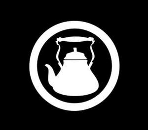
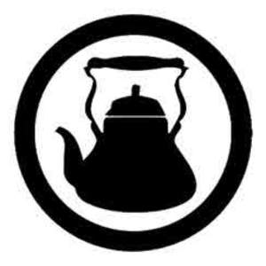

Trade Mark Journal No.2025/009 28 February 2025
UK00004150317 21 January 2025 (16,29,30,32,43)
Mark 1

Mark 2

- Class 16
- Paper, cardboard, rubber and plastic materials for packaging, not included in other classes; printed matter; bookbinding material; photographs; stationery and office requisites (except furniture).
- Class 29
- Meat, fish and poultry; meat extracts; preserved, dried and cooked fruits, nuts and vegetables; jellies, jams, compotes; eggs, milk and milk products; edible oils and fats; prepared meals; soups and potato crisps; fruit bars, nut bars, seeded bars.
- Class 30
- Indian and English coffees, Indian and English teas, cocoa and hot chocolate, malt drinks, sugar, rice, tapioca, sago, artificial coffee, Indian masalas; flour and preparations made from cereals, bread, pastry and confectionery, ices; honey, treacle; syrup; yeast, baking-powder; salt, mustard; vinegar, sauces (condiments); spices; ice; ready meals made predominately of rice and pasta; hot and cold English and Indian desserts; sweet desserts including ice cream and mousses; waffles; sandwiches; prepared meals; pizzas, pies and pasta dishes; all vegetable and meat dishes also; yoghurt coated bars, sugar coated bars and chocolate bars containing a mixture of grains, nuts and dried fruit.
- Class 32
- Mineral and aerated waters; all other non-alcoholic drinks; smoothies, slushes and milkshakes; fruit drinks and fruit juices; syrups for making beverages; iced drinks; de-alcoholised drinks, non-alcoholic beers and wines including mocktails.
- Class 43
- Services for providing food and drink; restaurant, bar and catering services; temporary accommodation; café services; cafeteria services; canteen services; food and drink catering; restaurant services; snack-bar services; self-service restaurants; catering services; booking and reservation services for restaurants and all other food and drink catering services.
Chaiiwala Limited
Representative: Howes Percival LLP